Group 16 Elements
Oxygen, sulphur, selenium, tellurium and polonium constitute Group 16 of the periodic table. This is sometimes known as group of chalcogens. The name is derived from the Greek word for brass and points to the association of sulphur and its congeners with copper. Most copper minerals contain either oxygen or sulphur and frequently the other members of the group.Occurrence:Oxygen is the most abundant of all the elements on earth. Oxygen forms about 46.6% by mass of earth’s crust. Dry air contains 20.946% oxygen by volume.
However, the abundance of sulphur in the earth’s crust is only 0.03-0.1%. Combined sulphur exists primarily as sulphates such as gypsum CaSO4.2H2O, epsom salt MgSO4.7H2O, baryte BaSO4 and sulphides such as galena PbS, zinc blende ZnS, copper pyrites CuFeS2. Traces of sulphur occur as hydrogen sulphide in volcanoes. Organic materials such as eggs, proteins, garlic, onion, mustard, hair and wool contain sulphur.
Selenium and tellurium are also found as metal selenides and tellurides in sulphide ores. Polonium occurs in nature as a decay product of thorium and uranium minerals.
The important atomic and physical properties of Group16 along with electronic configuration are discussed below.
Electronic Configuration:
The elements of Group16 have six electrons in the outermost shell and
have ns2np4 general electronic configuration.
Atomic and Ionic Radii:
Due to increase in the number of shells, atomic and ionic radii increase
from top to bottom in the group. The size of oxygen atom is, however,
exceptionally small.
Ionisation Enthalpy:
Ionisation enthalpy decreases down the group. It is due to increase in
size. However, the elements of this group have lower ionisation enthalpy
values compared to those of Group15 in the corresponding periods.
This is due to the fact that Group 15 elements have extra stable halffilled
p orbitals electronic configurations.
Electron Gain Enthalpy:
Because of the compact nature of oxygen atom, it has less negative
electron gain enthalpy than sulphur. However, from sulphur onwards
the value again becomes less negative upto polonium.
Electronegativity:
Next to fluorine, oxygen has the highest electronegativity value amongst
the elements. Within the group, electronegativity decreases with an
increase in atomic number. This implies that the metallic character
increases from oxygen to polonium.
Physical Properties: Oxygen and sulphur are non-metals, selenium and tellurium metalloids, whereas polonium is a metal. Polonium is radioactive and is short lived (Half-life 13.8 days). All these elements exhibit allotropy. The melting and boiling points increase with an increase in atomic number down the group. The large difference between the melting and boiling points of oxygen and sulphur may be explained on the basis of their atomicity; oxygen exists as diatomic molecule (O2) whereas sulphur exists as polyatomic molecule (S8).
Chemical Properties:
Oxidation states and trends in chemical reactivity:
The elements of Group 16 exhibit a number of oxidation states .
The stability of -2 oxidation state decreases down the group.
Polonium hardly shows –2 oxidation state. Since electronegativity of
oxygen is very high, it shows only negative oxidation state as –2 except
in the case of OF2 where its oxidation state is + 2. Other elements of the
group exhibit + 2, + 4, + 6 oxidation states but + 4 and + 6 are more
common. Sulphur, selenium and tellurium usually show + 4 oxidation
state in their compounds with oxygen and + 6 with fluorine. The stability
of + 6 oxidation state decreases down the group and stability of + 4
oxidation state increases (inert pair effect). Bonding in +4 and +6
oxidation states is primarily covalent.
Anomalous behaviour of oxygen:
The anomalous behaviour of oxygen, like other members of p-block
present in second period is due to its small size and high
electronegativity. One typical example of effects of small size and high
electronegativity is the presence of strong hydrogen bonding in H2O
which is not found in H2S.
The absence of d orbitals in oxygen limits its covalency to four and
in practice, rarely exceeds two. On the other hand, in case of other
elements of the group, the valence shells can be expanded and covalence
exceeds four.
(i) Reactivity with hydrogen: All the elements of Group 16 form
hydrides of the type H2E (E = O, S, Se, Te, Po).
Their acidic character increases
from H2O to H2Te. The increase in acidic character can be explained
in terms of decrease in bond enthalpy for the dissociation of H–E
bond down the group. Owing to the decrease in enthalpy for the
dissociation of H–E bond down the group, the thermal stability of
hydrides also decreases from H2O to H2Po. All the hydrides except
water possess reducing property and this character increases from
H2S to H2Te.
(ii) Reactivity with oxygen: All these elements form oxides of the EO2
and EO3 types where E = S, Se, Te or Po. Ozone (O3) and sulphur
dioxide (SO2) are gases while selenium dioxide (SeO2) is solid.
Reducing property of dioxide decreases from SO2 to TeO2; SO2 is
reducing while TeO2 is an oxidising agent. Besides EO2 type,
sulphur, selenium and tellurium also form EO3 type oxides (SO3,
SeO3, TeO3). Both types of oxides are acidic in nature.
(iii) Reactivity towards the halogens: Elements of Group 16 form a large
number of halides of the type, EX6, EX4 and EX2 where E is an
element of the group and X is a halogen. The stability of the halides
decreases in the order F- > Cl- > Br- > I-. Amongst hexahalides,
hexafluorides are the only stable halides. All hexafluorides are
gaseous in nature. They have octahedral structure. Sulphur
hexafluoride, SF6 is exceptionally stable for steric reasons.
Amongst tetrafluorides, SF4 is a gas, SeF4 a liquid and TeF4 a solid.
These fluorides have sp3d hybridisation and thus, have trigonal
bipyramidal structures in which one of the equatorial positions is
occupied by a lone pair of electrons. This geometry is also regarded as
see-saw geometry.
All elements except oxygen form dichlorides and dibromides. These
dihalides are formed by sp3 hybridisation and thus, have tetrahedral
structure. The well known monohalides are dimeric in nature. Examples
are S2F2, S2Cl2,
S2Br2, Se2Cl2 and Se2Br2.
These dimeric halides undergo disproportionation as given below:
Dioxygen
Preparation:Dioxygen can be obtained in the laboratory by the following ways:
(i) By heating oxygen containing salts such as chlorates, nitrates and permanganates.
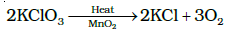
(ii) By the thermal decomposition of the oxides of metals low in the electrochemical series and higher oxides of some metals.
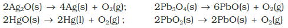
(iii) Hydrogen peroxide is readily decomposed into water and dioxygen by catalysts such as finely divided metals and manganese dioxide.
On large scale it can be prepared from water or air. Electrolysis of water leads to the release of hydrogen at the cathode and oxygen at the anode.
Industrially, dioxygen is obtained from air by first removing carbon dioxide and water vapour and then, the remaining gases are liquefied and fractionally distilled to give dinitrogen and dioxygen.
Properties:
Dioxygen is a colourless and odourless gas. Its solubility in water is to
the extent of 3.08 cm3 in 100 cm3 water at 293 K which is just sufficient
for the vital support of marine and aquatic life. It liquefies at 90 K and
freezes at 55 K. Oxygen atom has three stable isotopes: 16O, 17O and
18O. Molecular oxygen, O2 is unique in being paramagnetic inspite of
having even number of electrons .
Dioxygen directly reacts with nearly all metals and non-metals
except some metals ( e.g., Au, Pt) and some noble gases. Its combination
with other elements is often strongly exothermic which helps in
sustaining the reaction. However, to initiate the reaction, some external
heating is required as bond dissociation enthalpy of oxgyen-oxygen
double bond is high (493.4 kJ mol-1).
Some of the reactions of dioxygen with metals, non-metals and
other compounds are given below:
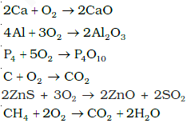
Some compounds are catalytically oxidised. For example,
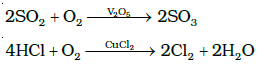
Uses: In addition to its importance in normal respiration and combustion
processes, oxygen is used in oxyacetylene welding, in the manufacture of
many metals, particularly steel. Oxygen cylinders are widely used in hospitals,
high altitude flying and in mountaineering. The combustion of fuels, e.g.,
hydrazines in liquid oxygen, provides tremendous thrust in rockets.
Simple Oxides
A binary compound of oxygen with another element is called oxide. As
already stated, oxygen reacts with most of the elements of the periodic
table to form oxides. In many cases one element forms two or more
oxides. The oxides vary widely in their nature and properties.
Oxides can be simple (e.g., MgO, Al2O3 ) or mixed (Pb3O4, Fe3O4).
Simple oxides can be classified on the basis of their acidic, basic or
amphoteric character. An oxide that combines with water to give an
acid is termed acidic oxide
(e.g., SO2, Cl2O7, CO2, N2O5 ).
For example,
SO2 combines with water to give H2SO3, an acid.
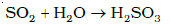
As a general rule, only non-metal oxides are acidic but oxides of
some metals in high oxidation state also have acidic character (e.g.,
Mn2O7, CrO3, V2O5).
The oxides which give a base with water are known
as basic oxides (e.g., Na2O, CaO, BaO). For example, CaO combines
with water to give Ca(OH)2, a base.
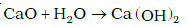
In general, metallic oxides are basic.
Some metallic oxides exhibit a dual behaviour. They show
characteristics of both acidic as well as basic oxides. Such oxides are
known as amphoteric oxides. They react with acids as well as alkalies.
For example, Al2O3 reacts with acids as well as alkalies.
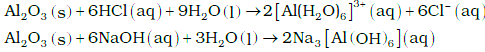
There are some oxides which are neither acidic nor basic. Such oxides
are known as neutral oxides. Examples of neutral oxides are CO, NO
and N2O.
Ozone:
Ozone is an allotropic form of oxygen. It is too reactive to remain for
long in the atmosphere at sea level. At a height of about 20 kilometres,
it is formed from atmospheric oxygen in the presence of sunlight. This
ozone layer protects the earth’s surface from an excessive concentration
of ultraviolet (UV) radiations.
Preparation:
When a slow dry stream of oxygen is passed through a silent electrical
discharge, conversion of oxygen to ozone (10%) occurs. The product is
known as ozonised oxygen.
Since the formation of ozone from oxygen is an endothermic process,
it is necessary to use a silent electrical discharge in its preparation to
prevent its decomposition.
If concentrations of ozone greater than 10 per cent are required, a
battery of ozonisers can be used, and pure ozone (b.p. 101.1K) can be
condensed in a vessel surrounded by liquid oxygen.
Properties:
Pure ozone is a pale blue gas, dark blue liquid and violet-black solid.
Ozone has a characteristic smell and in small concentrations it is harmless.
However, if the concentration rises above about 100 parts per million,
breathing becomes uncomfortable resulting in headache and nausea.
Ozone is thermodynamically unstable with respect to oxygen since
its decomposition into oxygen results in the liberation of heat (ΔH is
negative) and an increase in entropy (ΔS is positive). These two effects
reinforce each other, resulting in large negative Gibbs energy change
(ΔG) for its conversion into oxygen. It is not really surprising, therefore,
high concentrations of ozone can be dangerously explosive.
Due to the ease with which it liberates atoms of nascent oxygen
(O3 → O2 + O), it acts as a powerful oxidising agent. For example, it
oxidises lead sulphide to lead sulphate and iodide ions to iodine.
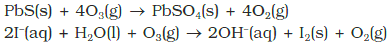
When ozone reacts with an excess of potassium iodide solution
buffered with a borate buffer (pH 9.2), iodine is liberated which can be
titrated against a standard solution of sodium thiosulphate. This is a
quantitative method for estimating O3 gas.
Experiments have shown that nitrogen oxides (particularly nitric
oxide) combine very rapidly with ozone and there is, thus, the possibility
that nitrogen oxides emitted from the exhaust systems of supersonic
jet aeroplanes might be slowly depleting the concentration of the ozone
layer in the upper atmosphere.
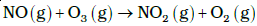
Another threat to this ozone layer is probably posed by the use of
freons which are used in aerosol sprays and as refrigerants.
Uses: It is used as a germicide, disinfectant and for sterilising water. It is also used for bleaching oils, ivory, flour, starch, etc. It acts as an oxidising agent in the manufacture of potassium permanganate.
Sulphur
Allotropic Forms:
Sulphur forms numerous allotropes of which the yellow rhombic
(α-sulphur) and monoclinic (β -sulphur) forms are the most important.
The stable form at room temperature is rhombic sulphur, which
transforms to monoclinic sulphur when heated above 369 K.
Rhombic sulphur (α-sulphur):
This allotrope is yellow in colour, m.p. 385.8 K and specific gravity
2.06. Rhombic sulphur crystals are formed on evaporating the solution
of roll sulphur in CS2. It is insoluble in water but dissolves to some
extent in benzene, alcohol and ether. It is readily soluble in CS2.
Monoclinic sulphur (β-sulphur):
Its m.p. is 393 K and specific gravity 1.98. It is soluble in CS2. This
form of sulphur is prepared by melting rhombic sulphur in a dish
and cooling, till crust is formed. Two holes are made in the crust and
the remaining liquid poured out. On removing the crust, colourless
needle shaped crystals of β-sulphur are formed. It is stable above 369 K
and transforms into α-sulphur below it. Conversely, α-sulphur is
stable below 369 K and transforms into β-sulphur above this. At 369 K
both the forms are stable. This temperature is called transition
temperature.
Both rhombic and monoclinic sulphur have S8 molecules. These S8
molecules are packed to give different crystal structures. The S8 ring
in both the forms is puckered and has a crown shape.
In cyclo-S6, the ring adopts the chair form and the molecular dimensions are as shown in Figure.
At elevated temperatures (~1000 K), S2 is the dominant species and is paramagnetic like O2.
Sulphur Dioxide
Preparation:
Sulphur dioxide is formed together with a little (6-8%) sulphur trioxide
when sulphur is burnt in air or oxygen:
In the laboratory it is readily generated by treating a sulphite with
dilute sulphuric acid.
Industrially, it is produced as a by-product of the roasting of
sulphide ores.
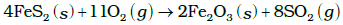
The gas after drying is liquefied under pressure and stored in steel cylinders.
Properties:
Sulphur dioxide is a colourless gas with pungent smell and is highly
soluble in water. It liquefies at room temperature under a pressure of
two atmospheres and boils at 263 K.
Sulphur dioxide, when passed through water, forms a solution of
sulphurous acid.
SO2(g) + H2O(l) → H2SO3(aq)
It reacts readily with sodium hydroxide solution, forming sodium
sulphite, which then reacts with more sulphur dioxide to form sodium
hydrogen sulphite.
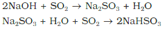
In its reaction with water and alkalies, the behaviour of sulphur
dioxide is very similar to that of carbon dioxide.
Sulphur dioxide reacts with chlorine in the presence of charcoal (which
acts as a catalyst) to give sulphuryl chloride, SO2Cl2. It is oxidised to
sulphur trioxide by oxygen in the presence of vanadium(V) oxide catalyst.
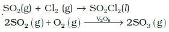
When moist, sulphur dioxide behaves as a reducing agent. For
example, it converts iron(III) ions to iron(II) ions and decolourises
acidified potassium permanganate(VII) solution; the latter reaction is a
convenient test for the gas.
The molecule of SO2 is angular. It is a resonance hybrid of the two canonical forms:
Uses: Sulphur dioxide is used (i) in refining petroleum and sugar (ii) in bleaching wool and silk and (iii) as an anti-chlor, disinfectant and preservative. Sulphuric acid, sodium hydrogen sulphite and calcium hydrogen sulphite (industrial chemicals) are manufactured from sulphur dioxide. Liquid SO2 is used as a solvent to dissolve a number of organic and inorganic chemicals.
Oxoacids of Sulphur:
Sulphur forms a number of oxoacids such as
H2SO3,
H2S2O3,
H2S2O4,
H2S2O5,
H2SxO6 (x = 2 to 5),
H2SO4,
H2S2O7,
H2SO5,
H2S2O8 . Some of
these acids are unstable and cannot be isolated. They are known in
aqueous solution or in the form of their salts. Structures of some
important oxoacids are shown in the following Figure.
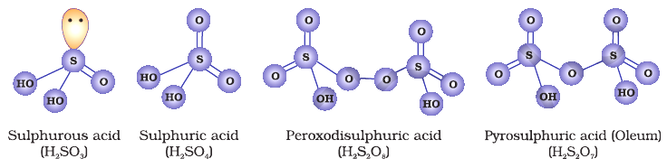
Sulphuric Acid
Manufacture:
Sulphuric acid is one of the most important industrial chemicals
worldwide.
Sulphuric acid is manufactured by the Contact Process which involves
three steps:
(i) burning of sulphur or sulphide ores in air to generate SO2.
(ii) conversion of SO2 to SO3 by the reaction with oxygen in the presence
of a catalyst (V2O5), and
(iii) absorption of SO3 in H2SO4 to give Oleum
(H2S2O7).
The SO2 produced is purified by removing dust and other
impurities such as arsenic compounds.
The key step in the manufacture of H2SO4 is the catalytic oxidation
of SO2 with O2 to give SO3 in the presence of
V2O5 (catalyst).
The reaction is exothermic, reversible and the forward reaction leads
to a decrease in volume. Therefore, low temperature and high pressure
are the favourable conditions for maximum yield. But the temperature
should not be very low otherwise rate of reaction will become slow.
In practice, the plant is operated at a pressure of 2 bar and a
temperature of 720 K. The SO3 gas from the catalytic converter is
absorbed in concentrated H2SO4 to produce oleum. Dilution of oleum
with water gives H2SO4 of the desired concentration. In the industry
two steps are carried out simultaneously to make the process a
continuous one and also to reduce the cost.
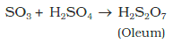
The sulphuric acid obtained by Contact process is 96-98% pure.
Properties:
Sulphuric acid is a colourless, dense, oily liquid with a specific gravity
of 1.84 at 298 K. The acid freezes at 283 K and boils at 611 K. It
dissolves in water with the evolution of a large quantity of heat. Hence,
care must be taken while preparing sulphuric acid solution from
concentrated sulphuric acid. The concentrated acid must be added
slowly into water with constant stirring.
The chemical reactions of sulphuric acid are as a result of the
following characteristics:
(a) low volatility
(b) strong acidic character
(c) strong affinity for water and
(d) ability to act as an oxidising agent.
In aqueous solution, sulphuric acid ionises in two steps.
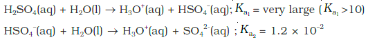
The larger value of Ka1 (Ka1 >10) means that H2SO4 is largely
dissociated into H+ and HSO4-. Greater the value of dissociation constant
(Ka), the stronger is the acid.
The acid forms two series of salts: normal sulphates (such as sodium
sulphate and copper sulphate) and acid sulphates (e.g., sodium
hydrogen sulphate).
Sulphuric acid, because of its low volatility can be used to
manufacture more volatile acids from their corresponding salts.
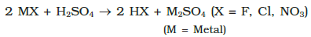
Concentrated sulphuric acid is a strong dehydrating agent. Many
wet gases can be dried by passing them through sulphuric acid,
provided the gases do not react with the acid. Sulphuric acid removes
water from organic compounds; it is evident by its charring action on
carbohydrates.
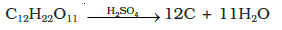
Hot concentrated sulphuric acid is a moderately strong oxidising
agent. In this respect, it is intermediate between phosphoric and nitric
acids. Both metals and non-metals are oxidised by concentrated
sulphuric acid, which is reduced to SO2.
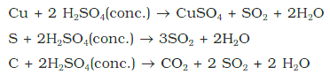
Uses:
Sulphuric acid is a very important industrial chemical. A nation’s
industrial strength can be judged by the quantity of sulphuric acid it
produces and consumes. It is needed for the manufacture of hundreds
of other compounds and also in many industrial processes. The bulk
of sulphuric acid produced is used in the manufacture of fertilisers
(e.g., ammonium sulphate, superphosphate). Other uses are in:
(a) petroleum refining (b) manufacture of pigments, paints and dyestuff
intermediates (c) detergent industry (d) metallurgical applications (e.g.,
cleansing metals before enameling, electroplating and galvanising
(e) storage batteries (f) in the manufacture of nitrocellulose products
and (g) as a laboratory reagent.